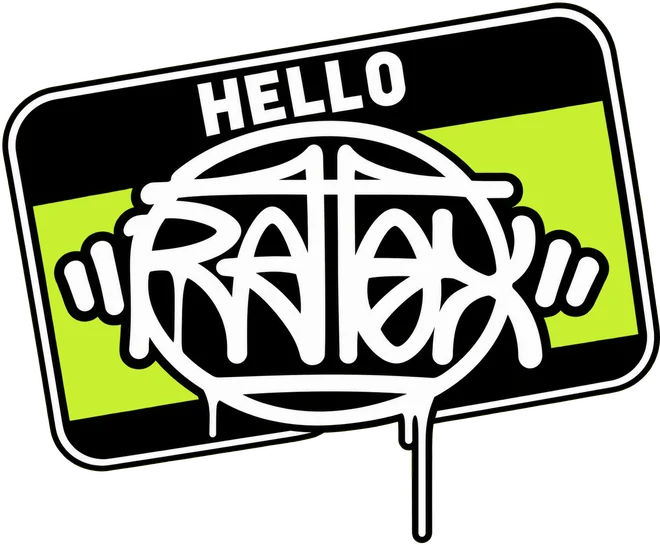

Tatuador · Salvador, BA

Tattoo é uma das coisas que eu faço. Mas não é a única.
Tribal, preto e cinza e freehand na pele. Graffiti, break e roupa na rua. Tudo no Rapadura Ink Studio, em Stella Maris.
Premiado na Tattoo Week · 1º Freehand e 1º Tribal no Combate
Arrasta o dedo no fundo: o muro é seu
“Essa é a minha principal tag, que existe antes mesmo de eu pegar numa máquina de tatuar.”
Quem tatua
Erick Ratox
Tatuador profissional em Salvador e CEO do Rapadura Ink Studio, em Stella Maris.
Fecha braço, costas e perna no tribal, faz preto e cinza, linhas e reforma. Ganhou prêmio na Tattoo Week, a maior convenção de tatuagem do mundo, e levou 1º lugar em Freehand e em Tribal no Combate Convenção Online. Antes da máquina veio o spray: a tag Ratox nasceu na rua, e o graffiti, o break e as roupas continuam junto.
Convenções
Prêmios
-
Tattoo Week Rio de Janeiro
Prêmio na maior convenção de tatuagem do mundo. A viagem saiu de um sorteio: três dias antes do evento ele ganhou um stand da Odd Sheep.
-
1º
Freehand · Combate Convenção Online
Primeiro lugar com um tribal desenhado direto na pele.
-
1º
Tribal · Combate Convenção Online
A mesma peça levou também o primeiro lugar na categoria Tribal.
-
SP
Tattoo Week São Paulo
Tatuou ao vivo na convenção um projeto tribal fora da curva, finalizado depois em Salvador.
Aprendi a nunca voltar pra casa de mãos ou mente vazias. Erick Ratox, sobre a Tattoo Week
Fora da maca
Tudo que as ruas têm a oferecer
Toda segunda-feira sai um post fora da tatuagem. Graffiti, break, roupas e muita arte.


Onde ele tatua
Rapadura Ink Studio
Um novo conceito de tatuagem e piercing em Stella Maris. O Erick é o CEO, e o estúdio fez dois anos em 2026.
- BairroStella Maris, Salvador, BA
- Endereçoa preencher
- Horárioa preencher
- AtendeCom hora marcada, pelo WhatsApp
Agenda aberta
Manda tua ideia
Conta a ideia, a região do corpo e o tamanho. O Erick responde no WhatsApp com valor e data.